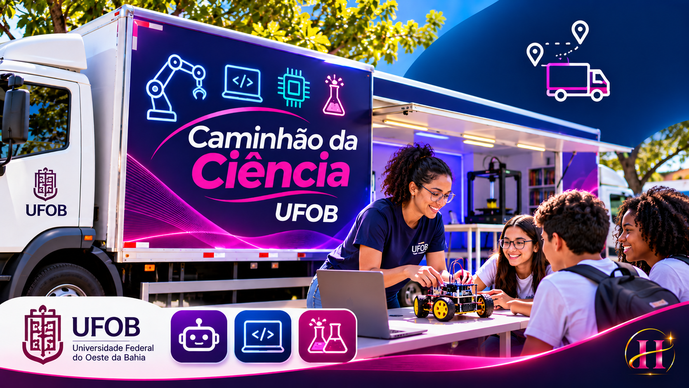

Ciência em prática
Experimentos de Física, Química, Biologia e Matemática aproximam conceitos escolares de situações do cotidiano.
A ciência não precisa ficar restrita aos laboratórios. Ela também pode viajar, ocupar escolas e despertar a curiosidade de comunidades.
Uma experiência de divulgação científica itinerante da Universidade Federal do Oeste da Bahia, conectando robótica, tecnologia e aprendizagem prática.

O Caminhão da Ciência é uma iniciativa de extensão da UFOB que articula atividades educativas itinerantes de baixo custo, incluindo experimentos e demonstrações científicas com participação do público.
Experimentos de Física, Química, Biologia e Matemática aproximam conceitos escolares de situações do cotidiano.
A iniciativa também inclui atividades de astronomia e um planetário itinerante documentado pela UFOB.
Projetos como Robótica de Garagem utilizam tecnologia e demonstrações para tornar a programação e a eletrônica mais acessíveis.
O repositório documenta atividades e experiências de divulgação científica em municípios da Bahia. Estes são alguns locais mencionados nos registros.
Municípios citados no repositório pessoal; apresentados sem atribuir uma ordem cronológica às viagens.
Seis experiências educativas inspiradas nos temas presentes nos códigos do repositório. Selecione uma estação para abrir o laboratório correspondente.
Modifique os parâmetros do código Arduino, execute a simulação e observe a resposta do componente. Cada estação usa um modelo simplificado de comportamento.
Altere as constantes numéricas no início do código e clique em Executar novamente. Este laboratório interpreta essas constantes; não compila o restante do sketch C/C++.
Demonstrações de robótica e tecnologia em atividades de divulgação científica.
Explicação de conceitos técnicos em uma linguagem acessível a pessoas de diferentes idades.
Participação na preparação e apresentação de atividades em diferentes espaços e cidades.
Experiência colaborativa com divulgação científica, eletrônica e aprendizagem prática.
O Caminhão da Ciência representa uma etapa da minha trajetória em educação tecnológica, robótica e comunicação científica.